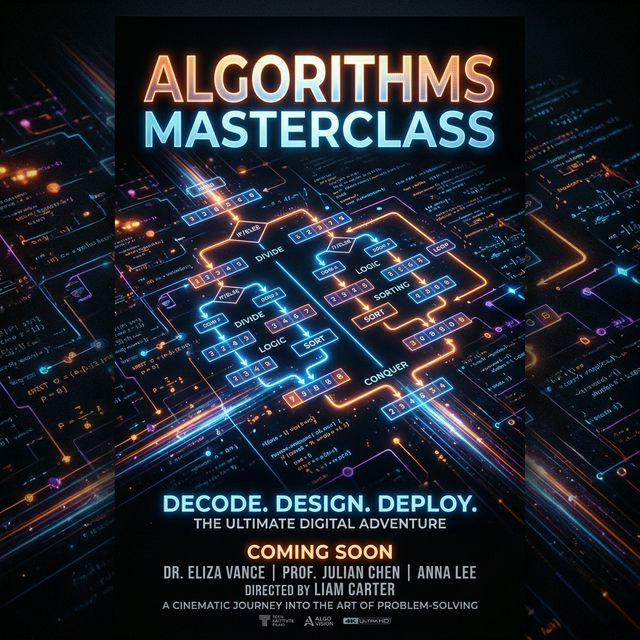
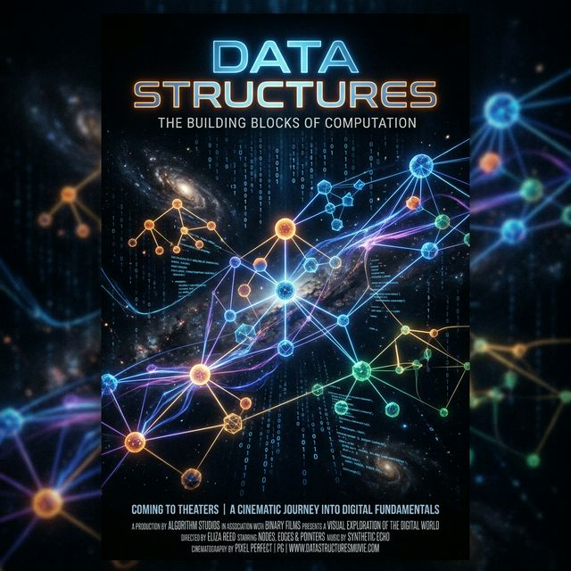

1. Introdução ao Ecossistema
Instalação com rustup e o uso do Cargo (gerenciador de pacotes e build).

Domine a linguagem que está redefinindo a programação de sistemas. Aprenda Ownership, Borrowing e como o compilador do Rust garante segurança de memória sem garbage collector.
Instalação com rustup e o uso do Cargo (gerenciador de pacotes e build).
O conceito de imutabilidade por padrão (let vs let mut).
Escalares (inteiros, floats, bool, char) e Compostos (tuplas e arrays).
Parâmetros, tipos de retorno e a diferença entre statements e expressions.
As três regras fundamentais da posse de dados em Rust.
O que acontece na memória ao transferir a posse de uma variável.
O uso de & e &mut. Regras de referências mutáveis vs imutáveis.
Referências a partes de uma coleção (especialmente &str vs String).

Uso de if, else e os laços loop, while e for.

Structs clássicas, Tuple Structs e Unit-like Structs.
O poder do match e do if let para controle de estado.
Uso prático de Vector
Lidando com valores nulos ou falhas sem exceções.
Propagação de erros de forma elegante e segura.
Quando deixar o programa quebrar e quando tratar o erro.

Criando funções e structs que funcionam com qualquer tipo
Definindo comportamentos compartilhados entre tipos.
Restringindo tipos genéricos para garantir capacidades.
Garantindo a validade das referências no tempo.
Organizando o código em múltiplos arquivos e pacotes externos.
Suporte nativo para testes unitários e de integração.
Visão geral sobre Box